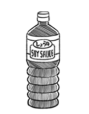

soy sauce
Soy sauce is a condiment made from fermented soybeans, roasted grain, brine and Aspergillus oryzae (or Aspergillus sojae molds). It's used in cooking or as a condiment. The flavor, color and aroma of soy sauce is attributed to non-enzymatic Maillard Browning The recipes vary, depending on different methods and durations of fermentation, different ratios of salt, water and fermented soy, and whether other ingredients are added. The taste of soy sauce is salty, with an umami, sweet taste.
Soy sauce is made by mixing soy beans and grains with mold cultures. The mixture is stored in an incubation chamber that controls both the temperature and humidity (traditionally, soy sauce is made in large urns under the sun). Bottled soy sauce can be stored at room temperature.